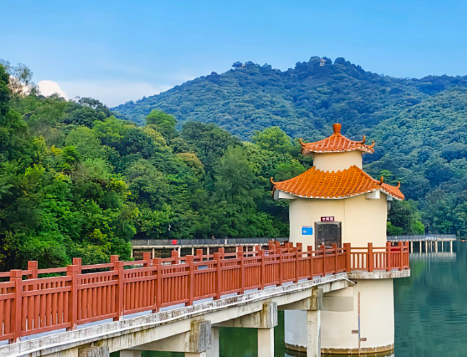
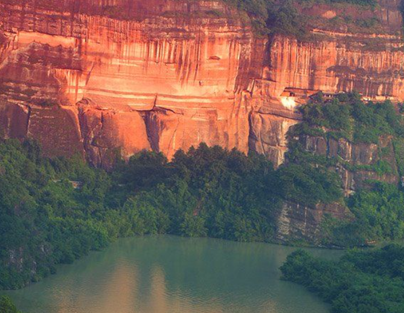
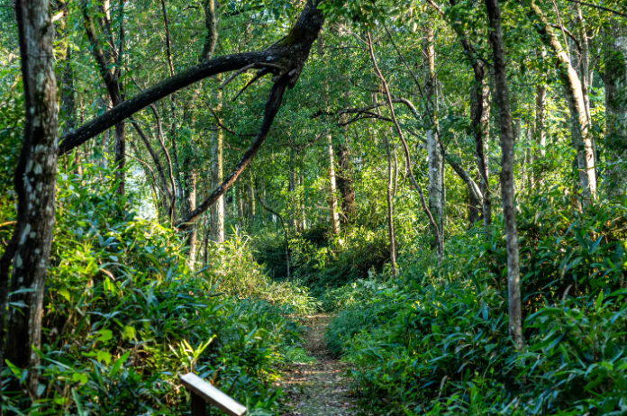

Known as the "Green Lung" of Guangzhou, Baiyun Mountain has been a source of inspiration for poets and artists for over a thousand years. Rising to 382 meters, this lush mountain offers panoramic views of the entire Pearl River Delta. Its 30 square kilometers of forested slopes are home to ancient temples, scenic gardens, and over 200 species of birds, making it a haven for nature lovers and hikers seeking refuge from the bustling city below.

A UNESCO World Heritage Site since 2010, Danxia Mountain in Shaoguan is one of the most spectacular geological formations in China. Its towering red sandstone cliffs, shaped by 65 million years of erosion, create a surreal landscape of deep valleys, dramatic pinnacles, and natural stone pillars. The area encompasses over 680 rock formations of various shapes, including the famous Yangyuan Rock and Yinuan Rock, earning it the title "Natural Geological Museum."
Situated in Huizhou along the South China Sea, Xunliao Bay is one of Guangdong's most pristine coastal destinations. With 11 kilometers of golden sand, crystal-clear turquoise waters, and gently rolling waves, this sheltered bay is perfect for swimming, snorkeling, and beachcombing. The bay is framed by verdant headlands and dotted with charming fishing villages, where you can enjoy the freshest seafood caught just hours before it reaches your table.

Spanning the mountainous border between Guangdong and Hunan provinces, the Nanling National Forest Park is a paradise of pristine wilderness and extraordinary biodiversity. At elevations exceeding 1,900 meters, it is home to ancient forests of dawn redwood, rare orchids, and a remarkable array of wildlife including clouded leopards and Chinese giant salamanders. In spring, the mountainsides burst into a spectacular carpet of azaleas and rhododendrons, while autumn paints the forest canopy in brilliant shades of gold and crimson.